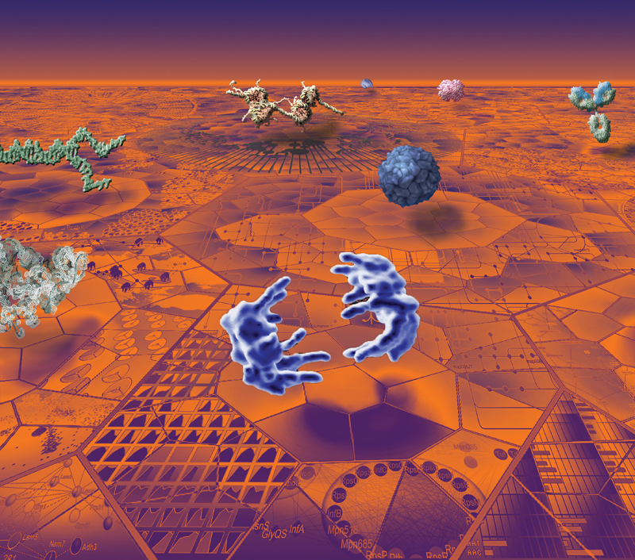
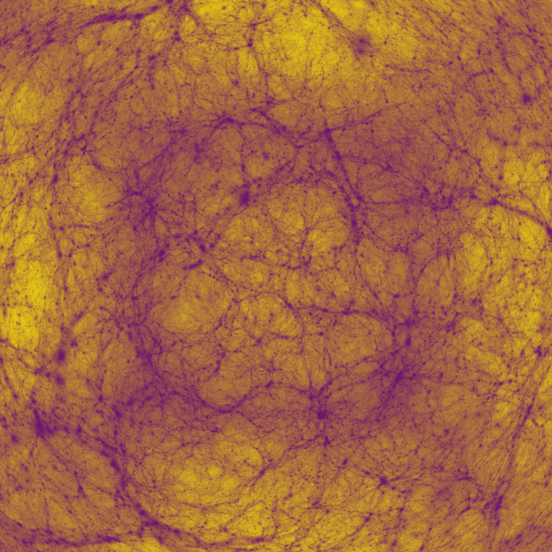
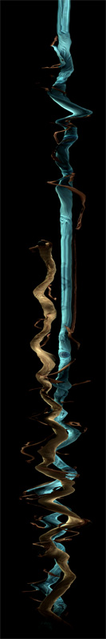
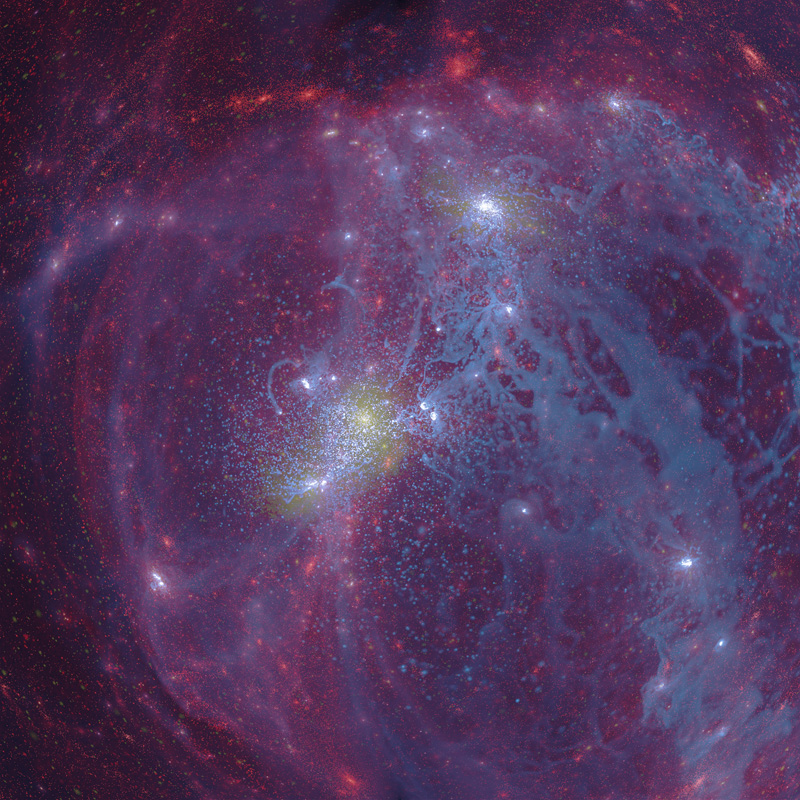
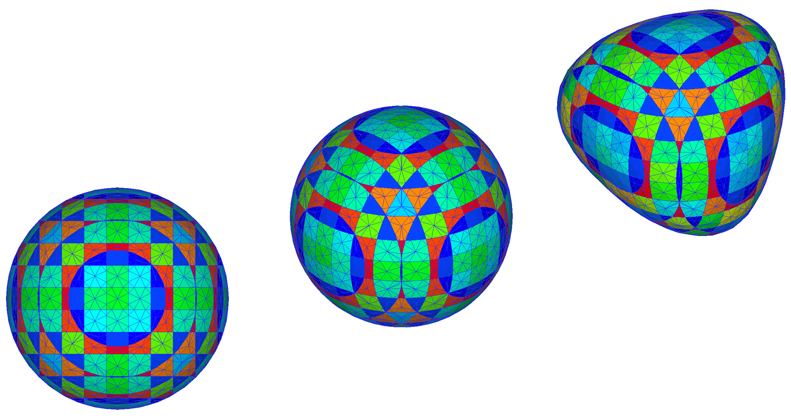
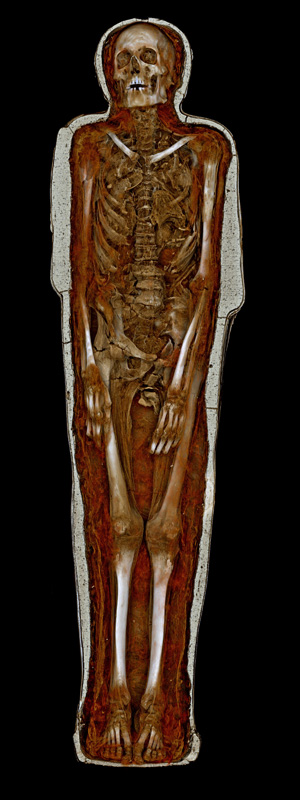
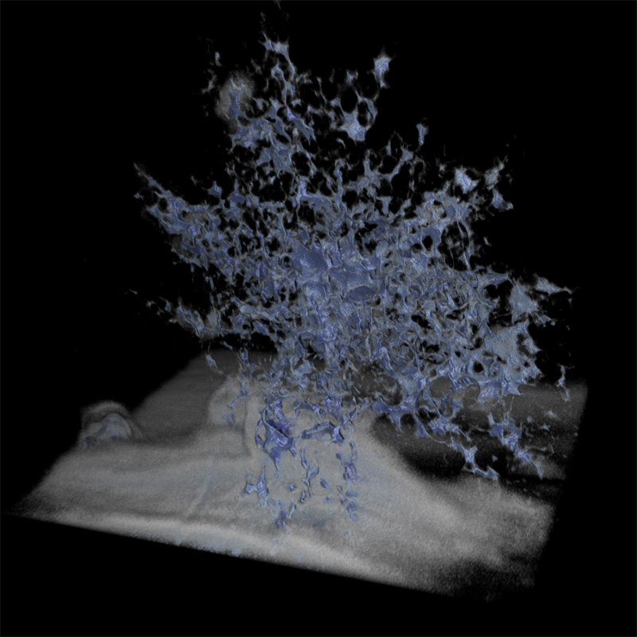
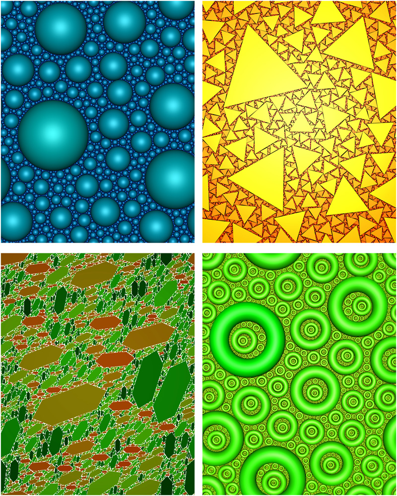
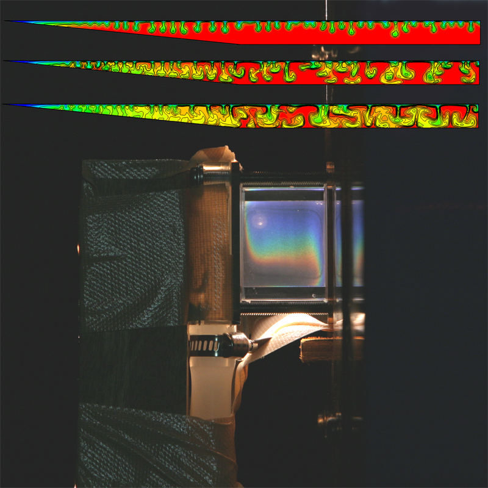
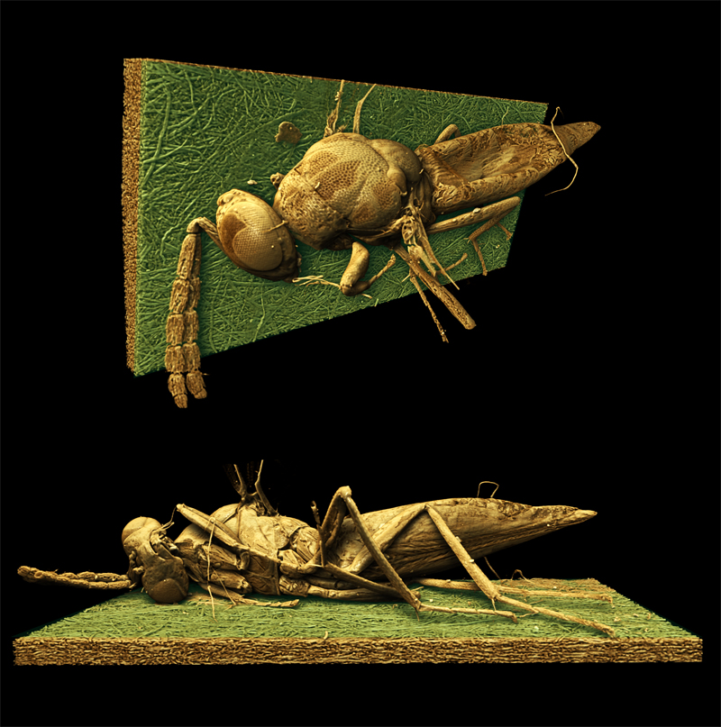

OzViz 2011 Image exhibition
Visualizing Biological Data in 2012
Author(s): Kate Patterson (Garvan Institute) and Seán I. O'Donoghue (CSIRO & Garvan Institute)
Description: The image is composed from a range of data visualizations currently used by biological researchers. The layout loosely follows a suggestion of the American designer Michael Beaton, and was originally inspired by a photograph of the '12 Apostles' from Peter Lik. The ground is made up of two-dimensional visualizations organized to fit within elements of the 2D Voronoi map from Jörg Bernhardt's 'OntologyMaps'. The following three-dimensional visualizations are shown above the ground: in the middle, at the front shown in blue are separating chromosomes in late stage of cell division cycle, from Jan Ellenberg et al.; behind that also in blue is shown the HIV virus capsid structure from Art Olsen; behind that is shown in yellow a Chromatin complex by Etsuko Uno and Drew Berry. Front left shows a crystal structure of RNA from Anne Pyle, Navtej Toor, & Kevin Keating; behind that in green are shown separating DNA strands. On the far right is shown a blue/green immunoglobulin antibody molecule from David Goodsell; behind that a typical globular protein structure also from David Goodsell; behind that, in the far distance, is shown a brain structure derived from MRI by Paul Thompson.
|

|
Cosmology
Author(s): Paul Bourke (iVEC@UWA), Alan Duffy (ICRAR, UWA), OWLS team
Description: Visualisation of a simulation of the large scale structure of the Universe. A cubic region (period bounds and 600 million light years on each side) of the Universe just after the Big Bang. The simulation consisted of approximately 1 billion particles. The visualisation is essentially a histogram of density along the rays from the camera through each pixel. Shows dark matter collapsing over 14 billion years of cosmic time, forming filaments and collapsing haloes of the Cosmic Web. The example here is a fisheye projection intended for presentation in a planetarium. Simulation computed on vayu (NCI), used 1024 cores, 2.8TB RAM, took 19 hours (~20,000 CPU hours).
|

|
Deconstructing Double District, 2010
Author(s): Volker Kuchelmeister (UNSW)
Performer: Saburo Teshigawara, Rihoko Sato.
Description: This work explores interactive stereoscopic 3D scan-line visualisation applied to a
dancer's body in motion. The result is a ever evolving abstract shape or form
controlled by a simple user interface. The visualisation is done in realtime and stereoscopic 3D.
|

|
Kinetic
Author(s): Paul Bourke (iVEC@UWA), Alan Duffy (ICRAR, UWA), Rob Crain (Leinden Observatory)
Description: Visualisation of a simulation of the formation of a spiral galaxy similar to our own Milky Way but at about half the current age. The Gas (blue) follows the Dark Matter (red) along the filaments, areas of high star formation are shown in yellow. Simulation computed on epic (iVEC), used 1024 cores, 2.05TB RAM, and took 470 hours (~500,000 CPU hours). The example here is a fisheye projection intended for presentation in a planetarium.
|

|
Interface Tracking in Computational Fluid Dynamics
Author(s): Mark K. Ho (ANSTO), Guan H. Yeoh (ANSTO), Victoria Timchenko (UNSW), John A. Reizes (UNSW)
Description: Computer simulations of gas-liquid flows require the tracking of a deformable interface moving through an array of stationary control volumes. Here, a spherical bubble is tracked as a collection of discrete interfaces residing within unit-cells. The gas void fraction corresponding to each unit-cell is displayed in colour, resulting in a pattern. This pattern changes as the bubble is moved and stretched.
|

|
Visualising Pausiris @ MONA
Author(s): Peter Morse, Paul Bourke (iVEC@UWA)
Description: Volume visualisation (Drishti) of a high resolution CT scan of the Pausiris mummy (Egypt, Ptolemaic to Roman Period, 100
BCE - CE 100; Human remains encased in stucco plaster with glass eyes, incised and painted decoration).
At what point does the body cease being a 'she'/'he' and become an 'it'?
This question asks its corollary: how can 'it' be interrogated and resuscitated and 'enlivened'? For Pausiris, it's a question about deixis set up as a denkmal: who was this person? what was his aliveness like? A person like you and I, who lived and breathed in another time and who believed different things; he understood the world in ways we no longer do.
|

|
Microfossil
Author(s): David Wacey (UWA), Charlie Kong (UNSW)
Description: The structure is a 1.9 billion year old microfossils from the Gunflint chert of Canada. The image is a reconstruction of c. 180 slices through the microfossil. The slices were c. 15 x 15 microns in size and 75 nm thick. Slicing was achieved using a focused beam of gallium ions, and imaging of successive slices using a scanning electron beam of a Zeiss Auriga Crossbeam instrument at the Electron Microscopy Unit of UNSW. |

|
Random Space Filling
Author(s): John Shier, Paul Bourke (iVEC@UWA)
Description: Iterative space filling of the plane with non-overlapping and non-Apollonian shapes has applications to problems in packing, geology, and pure mathematics. If on each iteration the area is reduced by some monotonically decreasing function then there appears to be only one such function that ensures space filling, namely the Reimann Zeta function. The behaviour has been experimentally verified for multiple shapes and in dimensions 1, 2, and 3. Space filling has been confirmed irrespective of the complexity of the shape, and even for variable shapes. |

|
Colours play in fluid experiments and simulations
Author(s): Tomasz Bednarz (CSIRO Mathematics, Informatics & Statistics), work carried out at the JCU (James Cook University)
Description: Top: Exchange flows in numerical simulations of reservoirs.
Bottom: Experimental setup for natural convection in liquid crystals. |

|
Insect-Dolicho
Author(s): John LaSalle, CSIRO (CES, Blackmountain, Canberra)
Description: Entomologists have been naming insects for over 200 years, and have
probably named only about a fifth of insects on the planet. We want
to use MicroCT/Drishti as a means of producing high quality image
libraries which can ultimately be combined with emerging technologies
in computer vision and image analysis to automatically extract the
morphological information used to document and describe new species of
insects. |

|
|